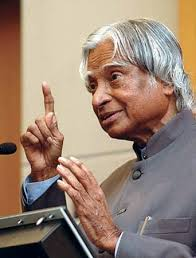

Dr. Kalam during his presidency, 2002–2007
The scientist who taught a nation to dream.
Avul Pakir Jainulabdeen Abdul Kalam was born on 15 October 1931 in Rameswaram, a small town in Tamil Nadu. His father was a boat owner who ferried pilgrims across to Dhanushkodi, and his family was modest but deeply grounded. From an early age, Kalam had that particular kind of curiosity — the kind that doesn't sit still. He sold newspapers before school to help with family expenses, yet he never let financial pressure shrink his ambitions.
He trained as an aeronautical engineer at the Madras Institute of Technology and eventually joined DRDO, then ISRO. For the next four decades, he was at the heart of India's most ambitious scientific projects — from building the SLV-3 rocket that put Rohini into orbit, to leading the Pokhran-II nuclear tests in 1998. He was not just a technician executing plans; he was someone who believed that science done right could change the material conditions of people's lives.
What made Kalam unusual was the gap between what he achieved and how he carried himself. Even as the "Missile Man of India" and later as President, he stayed deeply ordinary in his habits — vegetarian, playing the veena, writing poetry in Tamil. He visited schools constantly. He genuinely believed that talking to children was one of the most important things he could do with his time, and children seemed to feel it.
He died on 27 July 2015 while delivering a lecture at IIM Shillong, doing exactly the thing he loved most. He was 83. That kind of ending — surrounded by students, mid-sentence about science and possibility — feels almost too fitting. It was the life he would have chosen.
Six moments that shaped a remarkable journey.
Kalam came into the world in a modest household on the island of Rameswaram. His early life by the sea — watching migratory birds, listening to his father's conversations about faith and hard work — would quietly shape everything that followed.
After early work at DRDO, Kalam joined ISRO under the legendary Vikram Sarabhai. He led the Satellite Launch Vehicle project, and in 1980, SLV-3 successfully placed the Rohini satellite into orbit — India's first indigenously built launch vehicle.
Kalam was appointed Scientific Adviser to the Defence Minister and given charge of the Integrated Guided Missile Development Programme. This was the project that produced Agni, Prithvi, Akash, Trishul, and Nag — and earned him the title "Missile Man of India."
Kalam played a central role in Operation Shakti, India's second series of nuclear tests at Pokhran. The tests were a turning point in India's strategic and scientific standing. The following year, he was awarded the Bharat Ratna, India's highest civilian honour.
Kalam was elected India's 11th President with overwhelming cross-party support. He brought an unusual energy to Rashtrapati Bhavan — inviting schoolchildren in large numbers, reading letters from students, and continuing to think of himself first as a teacher.
On 27 July 2015, Kalam collapsed mid-lecture at IIM Shillong. He was speaking to students about the role of science in making the planet more liveable. He passed away shortly after. Few lives have ended in a way so consistent with how they were lived.
You have to dream before your dreams can come true.— A. P. J. Abdul Kalam
I'll be honest — when I first got this assignment, I wasn't sure who to pick. There are a lot of impressive people I could have chosen. But I kept coming back to Kalam, and I think I know why.
He's one of the few public figures I grew up hearing about who didn't feel like a myth. He was the President, yes — but he also gave out his email address so students could write to him. That's a very specific kind of person. Not someone performing accessibility, but someone who actually preferred the company of people who hadn't figured things out yet over those who already had.
I also find his trajectory genuinely inspiring in a technical sense. He started from a small town with limited resources and ended up leading some of the most complex engineering projects India has undertaken. That gap between starting conditions and eventual contribution is worth sitting with. It doesn't mean the gap doesn't exist — it means the gap is crossable.
This page is my way of spending a few hours thinking properly about who he was. I hope it shows.